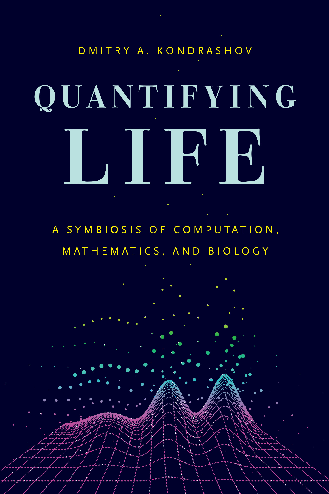

Quantifying Life
Preface

What is a man, said Athos, who has no landscape? Nothing but mirrors and tides.
– Anne Michaels, Fugitive Pieces
This is an online book to help biologists and biology-adjacent folks learn quantitative skills through the practice of programming in R. These skills can be roughly sorted into four types:
Building models and understanding assumptions
Writing code to perform computational tasks
Performing mathematical analysis of models
Working with data and using statistical tools
These skills interface, intertwine, and reinforce each other in the practice of biological research and are thus presented concurrently in this book, instead of being corralled into separate courses taught by different departments, like mathematics, statistics, and computer science. Here I combine ideas and skills from all of these disciplines into an educational narrative organized by increasing exposure to programming concepts.
A brief motivation of mathematical modeling
A mathematical model is a representation of some real object or phenomenon in terms of quantities (numbers). The goal of modeling is to create a description of the object in question that may be used to pose and answer questions about it, without doing hard experimental work. A good analogy for a mathematical model is a map of a geographic area: a map cannot record all of the complexity of the actual piece of land, because then the map would need to be size of the piece of land, and then it wouldn’t be very useful! Maps, and mathematical models, need to sacrifice the details and provide a birds-eye view of reality in order to guide the traveler or the scientist. The representation of reality in the model must be simple enough to be useful, yet complex enough to capture the essential features of what it is trying to represent.
Mathematical modeling has long been essential in physics: for instance, it is well known that distance traveled by an object traveling at constant speed \(v\) is proportional to the time traveled (called \(t\)). This mathematical model can be expressed as an equation:
\[d = vt\]
Since the time of Newton, physicists have been very successful at using mathematics to describe the behavior of matter of all sizes, ranging from subatomic particles to galaxies. However, mathematical modeling is a new arrow in a biologist’s quiver. Many biologists would argue that living systems are much more complex than either atoms or galaxies, since even a single cell is made up of a mind-boggling number of highly dynamic, interacting entities. That is true, but new advances in experimental biology are producing data that make quantitative methods indispensable for biology.
The advent of genetic sequencing in the 1970s and 80s has allowed us to determine the genomes of different species, and in the last few years next-generation sequencing has reduced sequencing costs for an individual human genome to a few thousand dollars. The resulting deluge of quantitative data has answered many outstanding questions, and also led to entirely new ones. We now understand that knowledge of genomic sequences is not enough for understanding how living things work, so the burgeoning field of systems biology investigates the interactions between genes, proteins, or other entities. The central question is to understand how a network of interactions between individual molecules can lead to large-scale results, such as the development of a fertilized egg into a complex organism. The human mind is not suited for making correct intuitive judgements about networks comprised of thousands of actors. Addressing questions of this complexity requires quantitative modeling.
Purpose of this book
This textbook is intended for a college-level course for biology and pre-medicine majors, or more established scientists interested in learning the applications of mathematical methods to biology. The book brings together concepts found in mathematics, computer science, and statistics courses to provide the student a collection of skills that are commonly used in biological research. The book has two overarching goals: one is to explain the quantitative language that often is a formidable barrier to understanding and critically evaluating research results in biological and medical sciences. The second is to teach students computational skills that they can use in their future research endeavors. The main premise of this approach is that computation is critical for understanding abstract mathematical ideas.
These goals are distinct from those of traditional mathematics courses that emphasize rigor and abstraction. I strongly believe that understanding of mathematical concepts is not contingent on being able to prove all of the underlying theorems. Instead, premature focus on abstraction obscures the ideas for most students; it is putting the theoretical cart before the experiential horse. I find that students can grasp deep concepts when they are allowed to experience them tangibly as numbers or pictures, and those with an abstract mindset can generalize and add rigor later. As I demonstrate in part 3 of the book, Markov chains can be explained without relying on the machinery of measure theory and stochastic processes, which require graduate level mathematical skills. The idea of a system randomly hopping between a few discrete states is far more accessible than sigma algebras and martingales. Of course, some abstraction is necessary when presenting mathematical ideas, and I provide correct definitions of terms and supply derivations when I find them to be illuminating. But I avoid rigorous proofs, and always favor understanding over mathematical precision.
The book is structured to facilitate learning computational skills. Over the course of the text students accumulate programming experience, progressing from assigning values to variables in the first chapter to solving nonlinear ODEs numerically by the end of the book. Learning to program for the first time is a challenging task, and I facilitate it by providing sample scripts for students to copy and modify to perform the requisite calculations. Programming requires careful, methodical thinking, which facilitates deeper understanding of the models being simulated. In my experience of teaching this course, students consistently report that learning basic scientific programming is a rewarding experience, which opens doors for them in future research and learning.
It is of course impossible to span the breadth of mathematics and computation used for modeling biological scenarios. This did not stop me from trying. The book is broad but selective, sticking to a few key concepts and examples which should provide enough of a basis for a student to go and explore a topic in more depth. For instance, I do not go through the usual menagerie of probability distributions in chapter 4, but only analyze the uniform and the binomial distributions. If one understands the concepts of distributions and their means and variances, it is not difficult to read up on the geometric or gamma distribution if one encounters it. Still, I omitted numerous topics and entire fields, some because they require greater mathematical sophistication, and others because they are too difficult for beginning programmers, e.g. sequence alignment and optimization algorithms. I hope that you do not end your quantitative journey with this book!
I take an even more selective approach to the biological topics that I present in every chapter. The book is not intended to teach biology, but I do introduce biological questions I find interesting, refer the reader to current research papers, and provide discussion questions for you to wrestle with. This requires a basic explanation of terms and ideas, so most chapters contain a broad brushstrokes summary of a biological field, e.g. measuring mutation rates, epidemiology modeling, hidden Markov models for gene structure, and limitations of medical testing. I hope the experts in these fields forgive my omitting the interesting details that they spend their lives investigating, and trust that I managed to get the basic ideas across without gross distortion.
Organization of the book
A course based on this textbook can be tailored to fit the quantitative needs of a biological sciences curriculum. At the University of Chicago the course I teach has replaced the last quarter of calculus as a first-year requirement for biology majors. This material could be used for a course without a calculus pre-requisite that a student takes before more rigorous statistics, mathematics, or computer science courses. It may also be taught as an upper-level elective course for students with greater maturity who may be ready to tackle the eigenvalues and differential equations chapters. My hope is that it may also prove useful for graduate students or established scientists who need an elementary but comprehensive introduction to the concepts they encounter in the literature or that they can use in their own research. Whatever path you traveled to get here, I wish you a fruitful journey through biomathematics and computation!